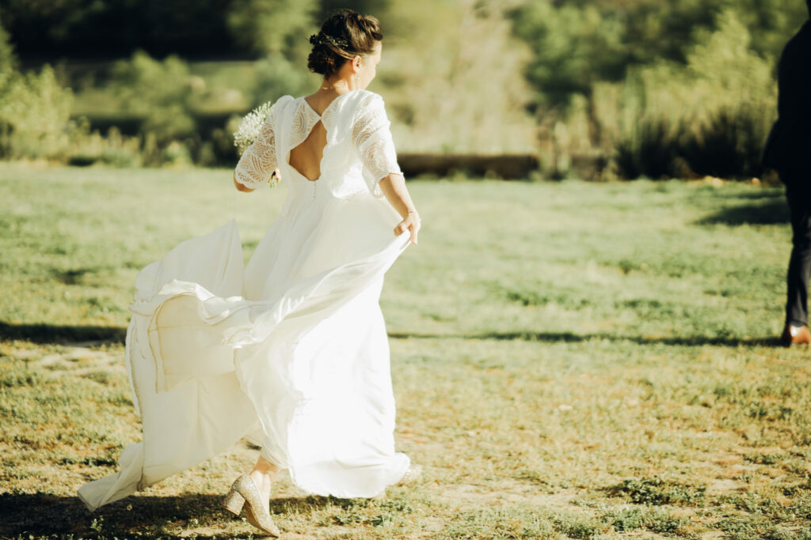
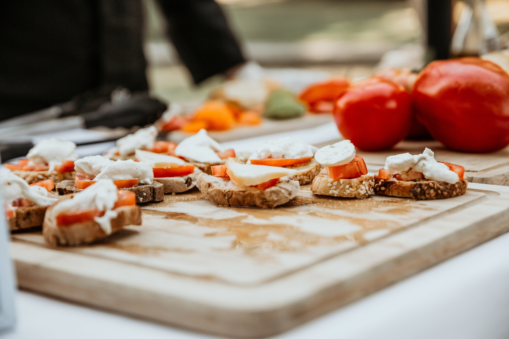
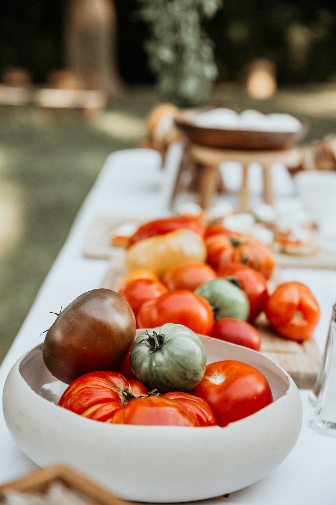
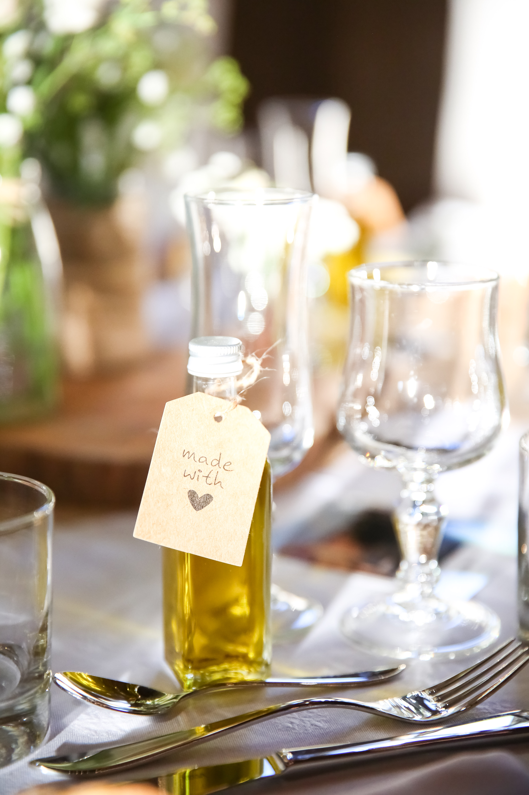
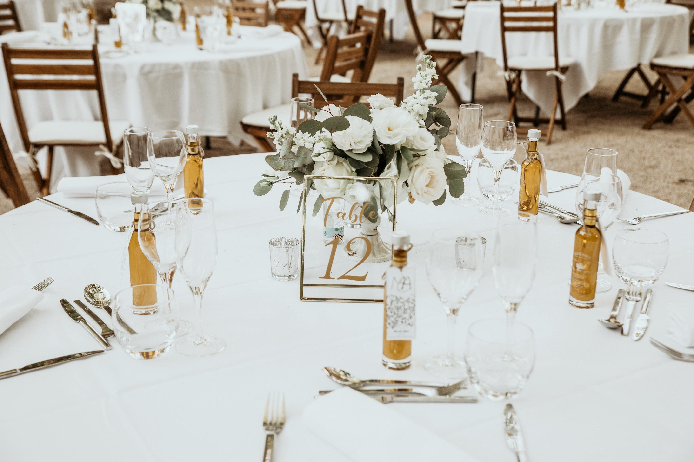

Galerie photos






En 2025, les futurs mariés sont de plus en plus nombreux à choisir des options plus durables et respectueuses de l’environnement pour célébrer leur union. Si l’amour est au cœur de chaque
En 2025, les futurs mariés sont de plus en plus nombreux à choisir des options plus durables et respectueuses de l’environnement pour célébrer leur union. Si l’amour est au cœur de chaque mariage, l’impact sur la planète devient également une priorité. De la décoration aux repas, en passant par le lieu de réception et les tenues, voici les principales tendances éco-responsables à adopter pour un mariage en harmonie avec la nature.
1. Le lieu de mariage : un choix crucial pour un mariage éco-responsable
Le lieu où vous célébrez votre mariage a un impact direct sur l’environnement. En 2025, de plus en plus de couples optent pour des lieux de réception qui privilégient la durabilité et l’éthique. Les établissements qui utilisent des énergies renouvelables, qui minimisent les déchets ou qui travaillent avec des fournisseurs locaux sont particulièrement prisés. De plus, les lieux en plein air, comme les jardins ou les fermes, permettent de réduire l’utilisation de matériaux non recyclables et de créer une atmosphère naturelle et authentique.
2. Décoration éco-responsable : l’art de la simplicité
En matière de décoration, la tendance est à la simplicité et à la réutilisation. De nombreux couples choisissent des décorations faites maison ou provenant de sources éthiques et locales. La décoration florale se fait de plus en plus responsable avec des fleurs de saison, cultivées localement ou issues de cultures biologiques. Les éléments décoratifs tels que des guirlandes en tissu, des centres de table faits main ou des objets vintage trouvent également leur place dans les mariages éco-responsables. Pour en savoir plus, voir l’article Décoration et fleurs éco-responsables.
3. Tenues de mariage durables : des choix éthiques pour le grand jour
Le choix des tenues est également essentiel pour un mariage éco-responsable. De plus en plus de créateurs proposent des robes de mariée et des costumes fabriqués à partir de matériaux durables et recyclés. Certains choisissent même de porter des vêtements de seconde main ou des tenues vintage, afin de réduire l’empreinte écologique liée à la fabrication de vêtements neufs. La location de tenues est aussi une option populaire pour ceux qui cherchent à éviter la surproduction. J’en avais déjà parlé dans cet article.
4. Repas végétariens ou végétaliens : un menu respectueux de l’environnement
Les choix alimentaires jouent un rôle clé dans l’impact écologique d’un mariage. Les menus végétariens et végétaliens continuent de gagner en popularité en 2025, car ils sont plus respectueux de l’environnement que les repas à base de viande. En choisissant un traiteur engagé dans la durabilité, vous pouvez vous assurer que les ingrédients proviennent de sources locales, biologiques et de saison. Ces repas ne sont pas seulement bons pour la planète, ils sont aussi délicieux et créatifs ! Vous aurez d’autres informations dans l’article concernant les repas de mariage éco-friendly.
5. Invitations numériques : réduire le gaspillage de papier
Les invitations en papier laissent place à des alternatives numériques. Les futurs mariés choisissent de plus en plus de créer des invitations électroniques, des sites web de mariage ou des cartes de vœux virtuelles. Cela permet non seulement de réduire la consommation de papier, mais aussi d’intégrer facilement des informations pratiques et des mises à jour pour les invités, tout en étant économique.
6. Transport éco-responsable : des options plus vertes pour les invités
Le transport représente une part importante de l’empreinte carbone d’un mariage. Pour limiter cet impact, les couples optent souvent pour des solutions de transport groupées, comme des bus ou des navettes, afin de réduire le nombre de voitures individuelles. En outre, de nombreux mariés choisissent des lieux accessibles en transport en commun ou à vélo, afin de rendre le mariage plus inclusif et responsable.
7. Souvenirs de mariage durables : penser à l’avenir
Les souvenirs de mariage sont souvent des petits objets jetés après la cérémonie. Mais en 2025, les souvenirs durables gagnent en popularité. Certains couples choisissent de faire des dons à des associations au lieu de distribuer des souvenirs matériels. D’autres offrent des cadeaux réutilisables, comme des plantes en pot ou des objets fabriqués à partir de matériaux recyclés. Je vous prévois bientôt un article dédié à ce sujet (édit : article ici). Vous pouvez également jeter un oeil au site Merci Coco que j’aime beaucoup !
8. Un engagement pour la planète : comment intégrer des pratiques durables dans le mariage
Le mariage éco-responsable ne s’arrête pas aux choix visibles comme la décoration ou les tenues. Il englobe également un état d’esprit global, celui d’un mariage qui respecte la planète à chaque étape. Cela inclut la gestion des déchets, la sélection des prestataires locaux, la réduction de la consommation d’énergie et d’eau, et la mise en place d’initiatives comme le recyclage et la compensation carbone.
Un mariage éthique et durable, une nouvelle façon de célébrer l’amour
En 2025, les tendances de mariage éco-responsables ne sont plus seulement une mode, mais un véritable engagement en faveur de la planète. Adopter ces pratiques permet de célébrer l’amour tout en préservant notre environnement pour les générations futures. En choisissant des options plus durables, vous pouvez organiser un mariage inoubliable tout en étant respectueux de la nature.